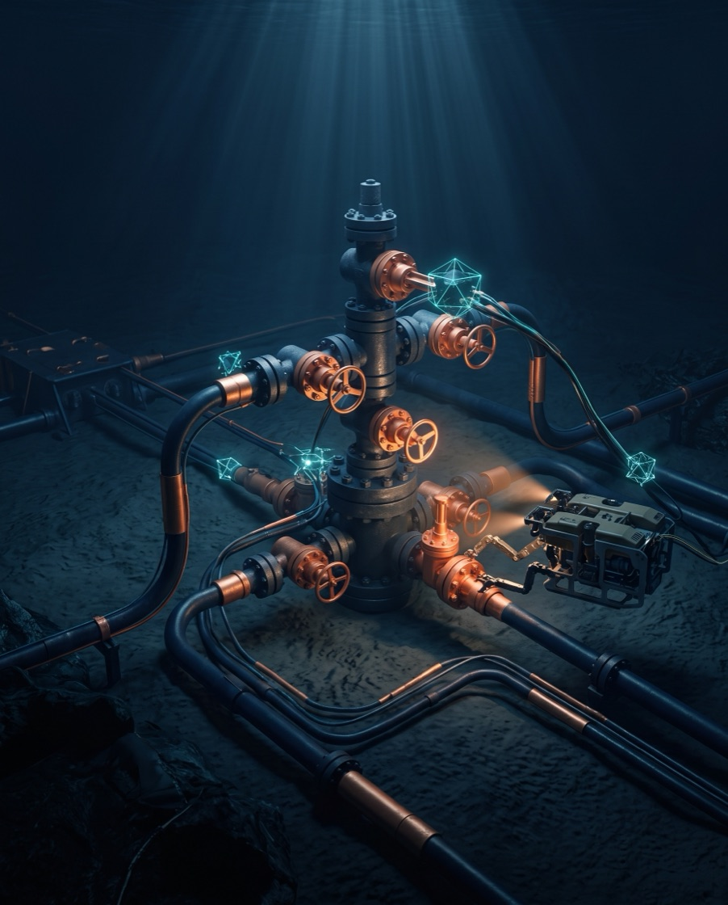

Nous sommes une société d'ingénierie offshore spécialisée dans le cycle
complet du gaz sous-marin — exploration, forage, production et
traitement. Nous complétons ce cœur de métier par l'EPC offshore, le procurement &
sourcing, l'intégrité des actifs, les systèmes QHSSE et la mise à disposition de
personnel qualifié pour l'énergie et l'industrie critique.
EPC offshoreForage sous-marinStratigraphie marineIntégrité des actifs et QHSSE
EPC offshorePackages techniques et coordination documentaire pour actifs marins et énergie critique.Subsea drillingLecture géologique, outillage sous-marin et soutien aux campagnes à haute exigence.QHSSE opérationnelDiscipline de sécurité, QA/QC et intégrité pour l'exécution, le procurement et le terrain.

Ingénierie, contrôle et exécution
Forage sous-marin et contrôle de puits dans des opérations offshore à haute exigence.
Image d'illustration.
Profil
Une société technique portée par une exécution réelle
LINDSTROM KM Ltd est un partenaire technique pour l'énergie et l'industrie : nous
structurons des packages EPC offshore, coordonnons le procurement critique, soutenons
les opérations de maintenance et mettons en place des cadres QHSSE et QA/QC pour des
clients de l'oil & gas, du marine, des utilities et de la pétrochimie.
Nous travaillons entre le bureau d'études et le front d'exécution : définition du
périmètre, vendor expediting, préparation documentaire, mobilisation de personnel
spécialisé, commissioning et accompagnement sur des actifs à haute exigence.
Pourquoi LINDSTROM KM
Un interlocuteur technique unique
Ingénierie, procurement et terrain sous une même direction technique.
Traçabilité documentaire et contrôle qualité à chaque phase.
Réseau de contractants homologués pour le forage et l'EPC offshore.
Présence opérationnelle sur les marchés énergétiques internationaux.
Portefeuille technique élargi
Notre offre couvre depuis l'exploration et la production de gaz sous-marin jusqu'à
l'EPC offshore, le procurement, l'intégrité des actifs et le soutien technique
spécialisé pour les opérations marines et l'industrie critique.
Spécialité principale
Exploration et production de gaz sous-marin — cycle complet
Le cœur d'ingénierie de LINDSTROM KM consiste à localiser le gaz sous le
fond marin, mettre en place l'extraction et exploiter l'ensemble du processus :
depuis la campagne d'exploration géophysique jusqu'au gaz traité et mesuré, prêt pour
l'exportation. Nous intégrons géosciences, forage sous-marin, systèmes de production
subsea et traitement en une seule chaîne d'exécution, avec QHSSE et intégrité des
actifs à chaque phase.
01Exploration & surveyÉtudes géophysiques et sismiques, stratigraphie marine et caractérisation du réservoir pour localiser et délimiter le gisement.
02Forage sous-marinDrilling offshore, outillage sous-marin, contrôle de puits et coordination avec les contractants de subsea drilling.
03Complétion de puitsWell completion, tête de puits sous-marine (subsea wellhead) et arbre de production : puits prêt à produire en toute sécurité.
04Production subseaManifolds, ombilicaux, flowlines et tie-backs pour acheminer le gaz du puits vers l'infrastructure de traitement.
05TraitementSéparation, déshydratation et adoucissement (élimination du H₂S/CO₂) jusqu'à la spécification commerciale.
06Mesurage & exportationComptage fiscal, compression et export par gazoduc ou terminal, avec traçabilité documentaire et compliance.
Intégration de l'ingénierie, du procurement et de la coordination de construction
pour des packages offshore, brownfield et greenfield, avec un accent sur la
séquence d'exécution, le contrôle documentaire et l'alignement entre disciplines.
02
Forage sous-marin & stratigraphie marine
Ligne spécialisée pour le trépan de forage sous-marin, la lecture des strates
géologiques océaniques, le soutien aux campagnes marines et l'articulation
technique avec les contractants de subsea tooling et d'inspection.
03
Commissioning, start-up & readiness
Préparation au commissioning, au pré-commissioning, à la mechanical completion, au
handover, au suivi des punch-lists et à la readiness opérationnelle pour les actifs
qui passent de l'ingénierie à la mise en service.
04
Maintenance & asset integrity
Gestion de la maintenance, asset integrity, reliability review et planification des
interventions pour protéger la disponibilité opérationnelle, la sécurité et la
durée de vie des actifs critiques.
05
QHSSE systems
Mise en place de cadres QHSSE, QA/QC, contrôle des risques, permis de travail,
reporting des incidents et normes de conformité pour les installations, bases
logistiques et opérations sur le terrain.
06
Inspection, QA/QC & technical audits
Inspection des matériaux et équipements, QA/QC fournisseurs, audits techniques et
clôture des non-conformités pour maintenir la qualité, la compliance et le contrôle
contractuel.
07
Project controls & technical documentation
Planification, project controls, élaboration de dossiers techniques, vendor data
book, traçabilité documentaire, reporting exécutif et soutien aux décisions de
direction de projet.
08
Procurement & sourcing
Achats techniques, vendor evaluation, expediting, homologation des fournisseurs et
contrôle des packages critiques pour les équipements, matériaux et services de
projets industriels et offshore.
09
Skilled manpower solutions
Mobilisation de profils techniques et opérationnels pour des projets upstream,
midstream, downstream, offshore et des opérations industrielles nécessitant une
réponse rapide et une traçabilité documentaire.
10
Trading & energy supply
Coordination de l'approvisionnement international de produits énergétiques,
packages de commodities, négociation documentaire et soutien commercial pour les
chaînes de l'oil & gas, de l'industrie et de l'énergie.
11
Enhanced recovery support
Soutien technique et de coordination pour des initiatives visant l'optimisation de
la production, l'amélioration de la récupération et la continuité opérationnelle
dans des environnements complexes.
12
Marine, energy & industrial support
Couverture transversale pour le marine, la pétrochimie, les utilities, l'industrie
lourde, le raffinage, les terminaux et les actifs énergétiques nécessitant un
soutien technique avec un jugement opérationnel.
13
Recherche sismique & analyse du sous-sol
Études sismiques et analyse du sous-sol fondées sur la donnée, pour réduire
l'incertitude technique et éclairer les décisions d'investissement avant forage.
14
Gestion de projets & de programmes
Gouvernance intégrée, planification, gestion des risques et contrôle de la
livraison au niveau du programme pour des actifs énergétiques complexes.
15
Développement & gestion d'actifs
Accompagnement commercial et technique sur tout le cycle de vie de l'actif :
priorités de capital, jalons de développement et continuité opérationnelle.
16
Équipe de conseil sur mesure
Nous assemblons l'équipe d'ingénierie et de conseil spécifique à votre mission,
sans que vous ayez à constituer une structure permanente.
17
Hydrates de méthane, gaz non conventionnel & géothermie
Évaluation technique de ressources énergétiques non conventionnelles —
hydrates de méthane sous-marins, gaz non conventionnel et actifs géothermiques
— en extension de notre capacité d'exploration et de développement.
Explorez les services en détail
Des pages dédiées pour les lignes où la profondeur technique fait la différence.
Emblématique
Gaz sous-marin E&P
Exploration, forage, production subsea, traitement et exportation — cycle complet.
Nous travaillons avec des opérateurs, des EPCistes, des contractants marins, des
propriétaires d'actifs et des organisations de supply chain internationale qui
valorisent le soutien technique et la discipline d'exécution, en combinant achats,
terrain et compliance.
Options opérationnelles
Sélectionnez le type de soutien technique
La page peut déjà classer si la demande concerne l'EPC, le procurement ou
l'intégrité des actifs avant d'ouvrir le contact.
Couverture internationale
Présence commerciale et opérationnelle internationale
United KingdomFranceSingaporeQatarAlgeriaMozambique
Nous opérons et fournissons un soutien technique sur des marchés énergétiques et
marins clés, avec une capacité de coordination commerciale et d'exécution
internationale.
Contact opérationnel
Main office, ingénierie et coordination de projets
Main office71-75 Shelton Street, Covent Garden, London, WC2H 9JQ, United Kingdom
engineering@lindstromkm.comContact technique pour dossier, périmètre et questions d'ingénierie.
projects@lindstromkm.comCoordination opérationnelle, documentation et suivi de l'exécution.
procurement@lindstromkm.comProcurement, expediting et relation fournisseurs.
Brief technique
Préparer une demande de soutien
Le formulaire prépare la demande prête à être envoyée à la bonne équipe, avec le
type de service déjà défini.
Destinations recommandées
Canaux par spécialité
engineering@lindstromkm.comQuestions d'ingénierie, dossiers et revue technique.
projects@lindstromkm.comCoordination de projet, commissioning et readiness opérationnelle.
procurement@lindstromkm.comVendor expediting, achats techniques et relation fournisseurs.